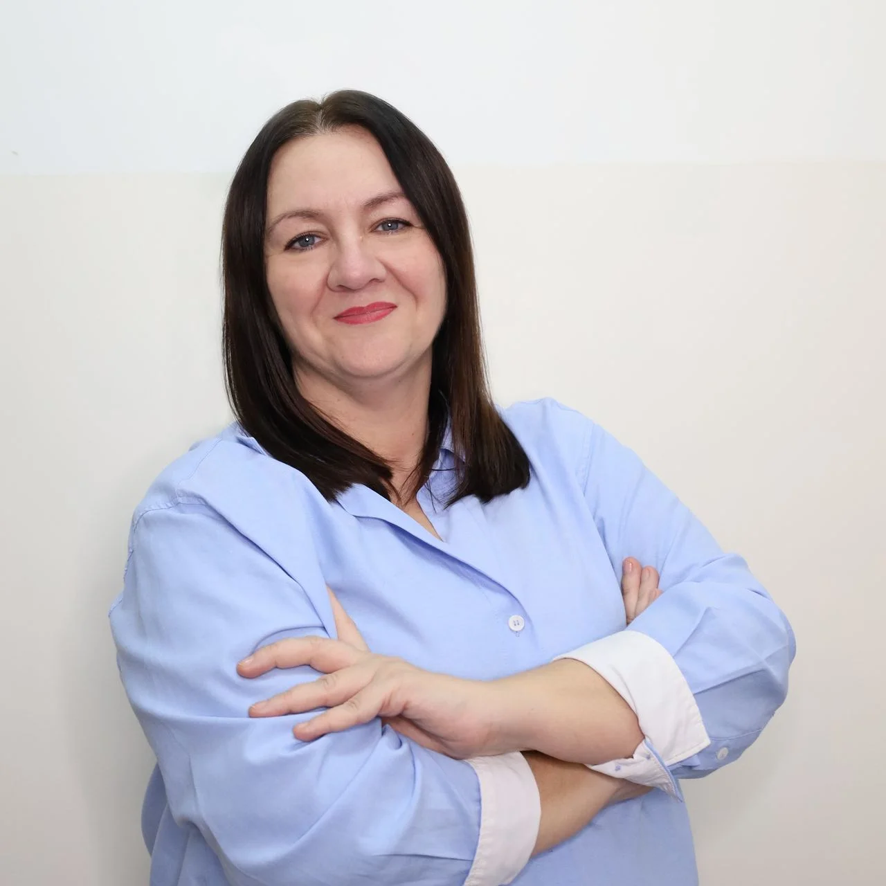

Poznaj specjalistów, którzy z pasją i zaangażowaniem pomagają dzieciom w ich rozwoju.
HelpKids to centrum diagnozy i terapii dziecka, które powstało z myślą o kompleksowym wspieraniu rozwoju dzieci. Nasza placówka mieści się w Lidzbarku Warmińskim i oferuje szeroki zakres usług specjalistycznych.
W naszym zespole pracują certyfikowani specjaliści - psycholodzy, pedagodzy, logopedzi i terapeuci - którzy nieustannie poszerzają swoje kwalifikacje, aby zapewnić najwyższą jakość usług.
Wierzymy, że każde dziecko jest wyjątkowe i zasługuje na indywidualne podejście. Dlatego nasze metody terapeutyczne dobieramy do możliwości psychofizycznych i potrzeb każdego małego pacjenta.

Neurologopeda, Pedagog Specjalny, Diagnosta ADOS-2
Absolwentka UWM w Olsztynie i Akademii Pedagogiki Specjalnej w Warszawie. Certyfikowany diagnosta ADOS-2, trener TUS i terapeuta metody elektrostymulacji. Prowadzi diagnozę i terapię logopedyczną, elektrostymulację, diagnozę ADOS-2 oraz TUS. Stara się stworzyć przestrzeń, do której dzieci chcą wracać.

Terapeuta Pedagogiczny, Terapeuta SI, Diagnosta ADOS-2
Terapeuta i diagnosta Integracji Sensorycznej (Centrum SI Warszawa), certyfikowany diagnosta ADOS-2, trener TUS, terapeuta ręki i metody Kids'Skills. Absolwentka UWM. Prowadzi diagnozę i terapię SI, terapię ręki, ADOS-2, TUS, terapię pedagogiczną oraz naukę czytania metodami 18 Struktur Wyrazowych i Metodą Krakowską.

Oligofrenopedagog, Terapeuta SI, Trener TUS, Specjalista SAS
Absolwentka UWM w Olsztynie (Edukacja Wczesnoszkolna) oraz studiów podyplomowych z Integracji Sensorycznej w Ateneum w Gdańsku. Ukończyła szkolenia z Neuroakustycznego Treningu Mózgu, SI, TUS oraz terapii dziecka z ASD. W HelpKids prowadzi diagnozę i terapię SI, TUS, terapię dziecka z ASD, zajęcia emocjonalno-społeczne oraz trening słuchowy. W pracy stawia na atmosferę bezpieczeństwa i ścisłą współpracę z rodzicami.

Terapeuta SI, Nauczyciel, Trener Sensoplastyki
Nauczyciel edukacji wczesnoszkolnej, terapeuta SI i certyfikowany trener I stopnia z Sensoplastyki. Obecnie poszerza kwalifikacje uczestnicząc w kursie z Terapii Ręki. Prowadzi terapię Integracji Sensorycznej, naukę czytania i pisania, terapię ręki oraz TUS.

Logopeda, Trener TUS, Terapeuta Elektrostymulacji, Provider Neuroflow
Absolwentka UWM w Olsztynie - logopedia kliniczna. Ukończyła szkolenia z AAC, elektrostymulacji, mioterapii, apraksji mowy, Neuroflow, SI oraz TUS. W HelpKids prowadzi diagnozę i terapię logopedyczną oraz elektrostymulację. Dla niej relacja z dzieckiem jest podstawą skutecznej terapii - pracuje w atmosferze bezpieczeństwa i zaufania, dostosowując terapię do indywidualnych potrzeb każdego pacjenta.

Psycholog kliniczny, Pedagog, Diagnosta, Psychoterapeuta CBT
Pomagam dzieciom, młodzieży i dorosłym lepiej rozumieć siebie, odzyskać równowagę emocjonalną i znaleźć skuteczne rozwiązania w trudnych momentach życia. Jestem psychologiem i pedagogiem z wieloletnim doświadczeniem w pracy terapeutycznej oraz diagnostycznej. Pracuję w nurcie poznawczo-behawioralnym, opierając terapię na sprawdzonych metodach i indywidualnym podejściu do każdej osoby. W gabinecie tworzę atmosferę bezpieczeństwa, akceptacji i uważności.
Rozumiemy potrzeby każdego dziecka i jego rodziny. Podchodzimy z sercem do każdego przypadku.
Nieustannie się rozwijamy i doskonalimy nasze umiejętności, aby zapewnić najwyższą jakość usług.
Wierzymy, że sukces terapii opiera się na ścisłej współpracy z rodzicami i opiekunami.
Holistyczne podejście do problemów, rozpatrywanie trudności na wielu płaszczyznach.
Masz pytania dotyczące naszych usług? Chętnie odpowiemy i pomożemy dobrać odpowiednią formę wsparcia dla Twojego dziecka.
Skontaktuj się z nami